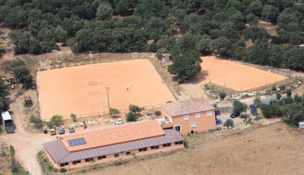

Bienvenue au centre équestre du Mas de Cournon !!
Qui sommes-nous ?
Le Centre Equestre du Mas de Cournon vous accueille tous les jours de l’année dans un
cadre chaleureux à 25min au Nord de Montpellier (34).
Que vous ayez l’envie d’apprendre, le besoin de vous ressourcer, l’esprit de compétition
ou la passion de randonner, vous êtes les bienvenus !!
Deux moniteurs diplômés BPJEPS, une stagiaire/apprentie BPJEPS et une animatrice
poneys sont présents toute l’année pour vous accompagner dans le milieu équestre et
vous faire partager leur passion, leurs connaissances et expériences…
Vous pourrez profiter des infrastructures que nous mettons à votre disposition, soit 2
carrières , un manège couvert entièrement et un cross possédant une piste de galop.
Le projet d’un nouveau manège avec toiture photovoltaïque est en cours.
Les possibilités de balades et/ou randonnées sont nombreuses vu la diversité des GR à
disposition et tous les sites touristiques qui entourent notre coin de paradis…
Si vous voulez nous connaître un peu plus, continuez la visite du site… A tout de suite
😁